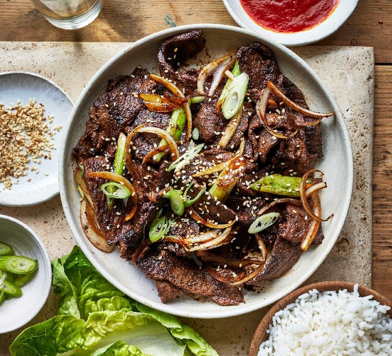

Bulgogi

...sometimes known as Korean BBQ beef, is a dish of thinly sliced grilled steak that has been marinated in a sweet soy, sesame, and garlic sauce.
Bulgogi, or Korean barbecue, literally means "fire meat."
Thin slices of beef (or sometimes pork) are marinated in a sweet-savory sauce, then grilled to juicy and flavorful perfection.
This restaurant-worthy beef bulgogi recipe is easy to make and impossible to resist. A sweet and savory marinade, made with ingredients
you probably already have on hand, ensures melt-in-your-mouth bulgogi every time.
Ingredients:
- beef
- soy sauce
- onion and garlic
- sesame seeds
- sesame oil
- sugar
- pepper
Steps:
- Gather all ingredients.
- Whisk soy sauce, green onion, sugar, garlic, sesame seeds, sesame oil, and pepper together in a bowl.
- Place flank steak slices in a shallow dish. Pour marinade over top. Cover and refrigerate for at least 1 hour or overnight.
- Preheat an outdoor grill for high heat, and lightly oil the grate.
- Quickly grill flank steak slices on the preheated grill until slightly charred and cooked through, 1 to 2 minutes per side.
- Serve hot and enjoy!